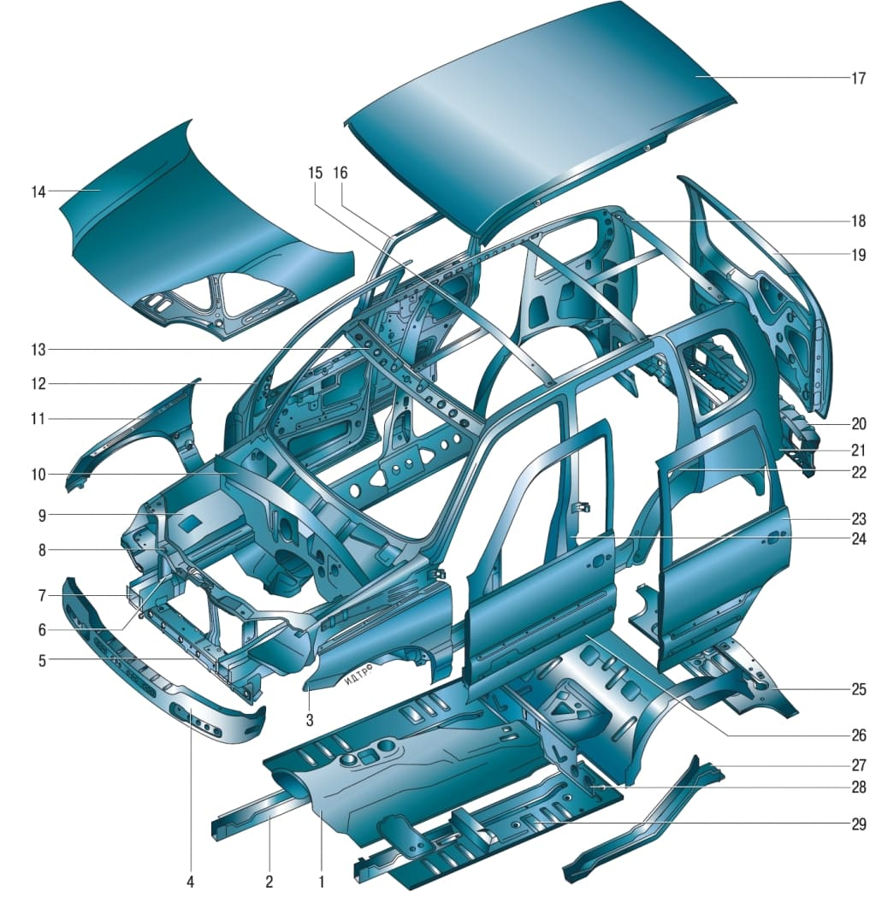
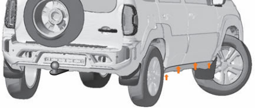
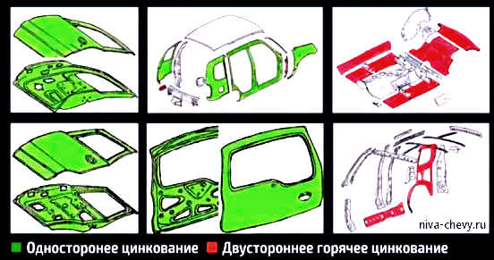
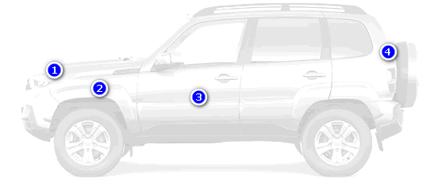

Кузов - конструкция
| Кузов автомобиля типа универсал, пятидверный, цельнометаллический, сварной, несущей конструкции. Кузов состоит из остова и навесных узлов: капота, дверей, бамперов, деталей остекления, внутренней обивки и наружной отделки. |

Рисунок 10.1. Детали каркаса кузова: 1 – тоннель пола; 2 – передний правый лонжерон пола; 3 – левое переднее крыло; 4 – балка переднего буфера; 5 – нижняя поперечина рамки радиатора; 6 – правая стойка рамки радиатора; 7 – правый передний лонжерон; 8 – верхняя поперечина рамки радиатора; 9 – правый брызговик переднего крыла; 10 – щит передка; 11 – правое переднее крыло; 12 – правая передняя дверь; 13 – передняя балка крыши; 14 – капот; 15 – усилитель крыши; 16 – правая задняя дверь; 17 – панель крыши; 18 – задний усилитель крыши; 19 – Дверь багажника; 20 – поперечина заднего пола; 21 – левое заднее крыло; 22 – левая боковина кузова; 23 – левая задняя дверь; 24 – левая центральная стойка боковины; 25 – задняя панель пола; 26 – левая передняя дверь; 27 – левый средний лонжерон пола; 28 – поперечина пола; 29 – панель пола передняя левая |
|
|
| Остов кузова представляет собой жесткую пространственную ферму, состоящую из следующих узлов: основания пола с передком и поперечиной 20 (рисунок 10.1) заднего пола, правой и левой боковин 22 в сборе с задними крыльями 21, передней балки крыши 13, усилителей крыши 15 и 18, а также панели крыши 17. К навесным узлам относятся боковые двери и Дверь багажника, капот, передние крылья, буфера и облицовка радиатора. Двери и капот закреплены на кузове при помощи петель. Передние крылья, а также передний и задний буфера закреплены на кузове болтами. Облицовка радиатора прикреплена четырьмя винтами. |
| Ветровое, заднее и боковые стекла приклеены к кузову (стекло двери задка приклеено к двери и имеет элемент обогрева) и являются частью его силовой схемы. |
| Передние сиденья раздельные, с регулировкой наклона спинок и механизмами перемещения в продольном направлении, с легкосъемными подголовниками, регулируемыми по высоте и углу наклона. Заднее сиденье, конструктивно состоящее из двух сидений, может быть сложено для увеличения объема багажного отделения как целиком, так и по частям. Посадочные места водителя и пассажиров оборудованы ремнями безопасности. |
| В салоне автомобиля установлены панель приборов, прикуриватель, пепельницы, вещевой ящик, Козырьки, система отопления и вентиляции, зеркало заднего вида. |
| Автомобиль оборудован двумя передними и одной задней проушинами для буксировки, фартуками передних и задних колес. |
РЕКОМЕНДАЦИИ
На время длительной стоянки автомобиля не накрывайте кузов чехлом из плотного материала. Намокший под дождем чехол создает при нагреве на солнце паровую «баню», и лакокрасочное покрытие кузова под ним может отслоиться и вспучиться. Кроме того, под порывами ветра чехол перемещается и истирает краску на выступающих частях кузова.
Не кладите на кузов предметы из резины. Через некоторое время резина оставит на покрытии (особенно светлом) несмываемые пятна.
Если со временем резинотехнические изделия на кузове вашего автомобиля потеряли «товарный» вид, протрите их кремом для рук, содержащим глицерин, или силиконовой смазкой, продаваемой в магазинах автозапчастей.
Время от времени проводите тонкой металлической пластинкой между боковым стеклом и резиновой накладкой на двери – так вы удалите пыль и песок и предохраните стекло от царапин.
После мойки обязательно вынимайте резиновые коврики и сушите салон. Влага под ковриками – главная причина появления коррозии пола 
Дренажные отверстия дверей и порогов
|
|
Вопрос:
Возможно ли, чтобы под повреждённым лакокрасочным покрытием после ДТП был голый металл без грунтовки?
Ответ:
Это исключено. В соответствии с технологическим процессом адгезия (сцепление) слоев базового покрытия и грунта намного выше, чем грунта и поверхности металла кузова. Именно поэтому при механическом воздействии в первую очередь происходит отслоение комбинации база + грунт от металла. В наличии укрывочного грунта можно убедиться, посмотрев на изнаночную сторону отслоившегося базового слоя – он имеет серый цвет.
У Шевроле Нивы оцинкованы следующие детали кузова:
- Панель пола (передняя, средняя, задняя)
- Соединители порога и коробки порога пола
- Панель боковины внутренняя
- Накладка боковины нижняя
- Усилитель переднего крыла задний
- Брызговик переднего крыла
- Надставка заднего крыла
- Боковина кузова
- Панель передней двери (наружная и внутренняя)
- Панель задней двери (наружная и внутренняя)
- Панель двери задка (наружная и внутренняя)
- Крыло переднее
- Крыло заднее
Niva Travel

Кузовной металл поставляет Магнитогорский металлургический комбинат. Двустороннему горячему цинкованию подвергаются только самые ответственные детали пола и задних колесных арок. Все двери, боковины и крылья - с односторонним цинкованием.
Толщина лакокрасочного покрытия (Travel)

1. Передняя кромка капота — 131 мкм
2. Крыло переднее, в районе колёсной арки — 115 мкм
3. Передняя дверь, в нижней части — 101 мкм
4. Нижняя кромка крышки багажника — 109 мкм
Видео